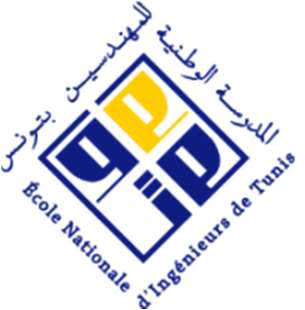

September 2026 - September 2027

Master of Research
Information Processing and Complexity of the Living (TICV), ENIT.

Open to a 6-month AI / Data Science internship
Telecommunications Engineering | ENIT
Telecommunications Engineering
I work across AI, computer vision, and intelligent systems, building research into practical tools.
About
Telecommunications engineering student at the National Engineering School of Tunis (ENIT), specializing in Data Science for Intelligent Communications, and pursuing a Master of Research in Information Processing and Complexity of the Living (TICV). My work spans AI, machine learning, signal processing, computer vision, and optical communications.
I have explored these fields through research, internships, academic projects, and technical community leadership.
Education
September 2026 - September 2027

Information Processing and Complexity of the Living (TICV), ENIT.
September 2024 - June 2027
Telecommunications Engineering, specializing in Data Science for Intelligent Communications, ENIT.
September 2022 - May 2024
Physics and Chemistry, Preparatory Institute for Engineering Studies, Nabeul. Ranked 144 among 950+ candidates in the national engineering entrance examination.
June 2022
High Honors, Mahmoud Messadi High School, Nabeul, Tunisia.
Skills
A visual snapshot of the platforms, methods, and systems I work with.
Projects
Research and engineering work, with project details and supporting images.
Experience
Applied research and technical work from industry and ENIT.
Community
Leadership, service, and communications across IEEE groups.
Websites
Community website
Designed and developed the official WordPress website for the IEEE ENIT Student Branch as part of the Student Branch Chair role in 2025.
Event website
Developed the IEEE Education Week Tunisia website in collaboration with the IEEE Tunisia Section and its Educational Activities Committee.
Design
A small selection of visual work.
Contact
Have a project, opportunity, or idea to discuss? Get in touch.
Download CV